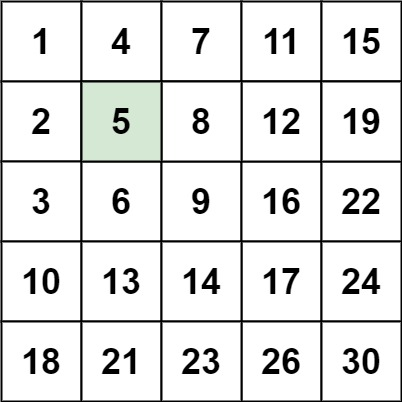
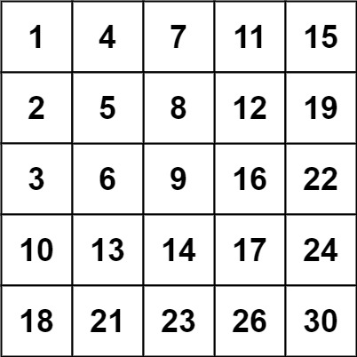

题面
编写一个高效的算法来搜索 m x n 矩阵 matrix 中的一个目标值 target 。该矩阵具有以下特性：
- 每行的元素从左到右升序排列。
- 每列的元素从上到下升序排列。
示例 1：

输入： matrix = [[1,4,7,11,15],[2,5,8,12,19],[3,6,9,16,22],[10,13,14,17,24],[18,21,23,26,30]], target = 5
输出： true示例 2：

输入： matrix = [[1,4,7,11,15],[2,5,8,12,19],[3,6,9,16,22],[10,13,14,17,24],[18,21,23,26,30]], target = 20
输出： false提示：
m == matrix.lengthn == matrix[i].length1 <= n, m <= 300-109 <= matrix[i][j] <= 109- 每行的所有元素从左到右升序排列
- 每列的所有元素从上到下升序排列
-109 <= target <= 109
思路
- 暴力遍历是 O(mn)，没有利用矩阵"从上到下递增、从左到右递增"的特点
- 关键洞察：把矩阵逆时针旋转 45°，从左下角（或右上角）看，结构类似二叉搜索树——左分支更小、右分支更大：
原笔记中的自定义题图文件未找到
- 以左下角元素为起点（标志数
flag）： flag > target：target 一定在 flag 上方 → 消去当前行，i -= 1flag < target：target 一定在 flag 右方 → 消去当前列，j += 1flag == target：找到，返回True- 每次移动都消去一整行或一整列，相当于在"BST"上走了一步
- 循环终止：
i < 0（走出上边界）或j >= n（走出右边界），说明不存在，返回False
代码实现
class Solution:
def searchMatrix(self, matrix: List[List[int]], target: int) -> bool:
i, j = len(matrix) - 1, 0
while i >= 0 and j < len(matrix[0]):
if matrix[i][j] > target:
i -= 1
elif matrix[i][j] < target:
j += 1
else:
return True
return False- 复杂度：时间 O(m + n)（每步消去一行或一列，最多走 m + n 步），空间 O(1)